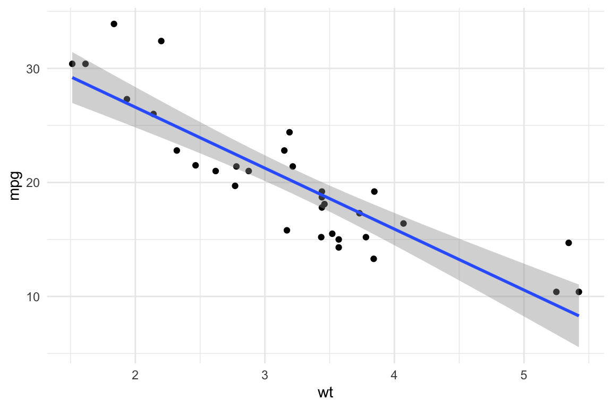
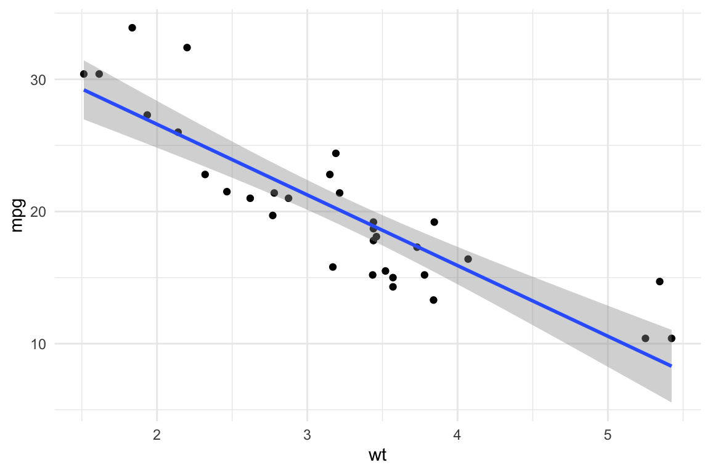
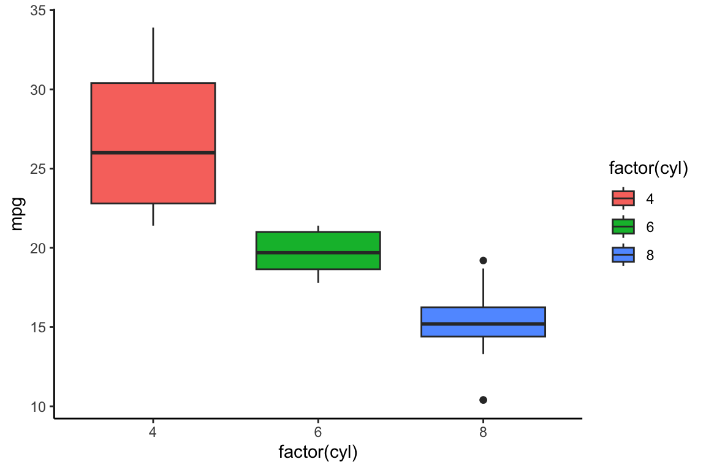

Show code
library(ggplot2)
ggplot(mtcars, aes(x = wt, y = mpg)) +
geom_point() +
geom_smooth(method = "lm") +
theme_minimal()
Quarto is a powerful tool for creating dynamic documents, and it supports multiple output formats, including HTML and PDF. This article presents essential tips and tricks to help you customize and optimize your Quarto documents effectively.
We are going to explore the new features offered by Quarto documents (*.qmd).

Quarto is a refined version (and successor) of R-markdown. It is an open-source scientific and technical publishing system built on Pandoc. It allows to combine R, Python, Julia, and Java (Observable JS) for the design of reports, applications, websites, blogs, scientific publications, and more…
title, author, date, and categories to structure metadata.toc: true) and section numbering (number-sections: true).bibliography file and enable link-citations: true.# for sections and ## for subsections.`code` for inline formatting.```r for code chunks.::: {.callout-note} for special notes in Quarto.(@fig:name) for figures and (@tbl:name) for tables.To include citations from the references.bib file, use the following syntax:
@Gelman2006.Quarto automatically formats citations according to the bibliography file. Ensure your references are properly formatted to avoid citation errors.
Enable Smooth Scrolling
format:
html:
smooth-scroll: trueCustomizing Appearance
table-striped, table-hover).styles.css).Interactive Elements
collapse: true in code chunks to hide/show code.datatable() function). Well suited for dashboards.iframe.Customize LaTeX Formatting
format:
pdf:
documentclass: article
number-sections: trueAdjust Page Layout
geometry.\textbf{bold text} for bold).Handling Wide Tables and Figures
out.width="80%" in knitr options for better scaling.dpi=300.Quarto supports several options for customizing code execution. Here are some useful ones:
echo=TRUE: Displays the code in the output.warning=FALSE: Hides warnings.message=FALSE: Suppresses messages.fig.width=6, fig.height=4: Adjusts figure size.eval=FALSE: Prevents execution of the chunk.include: true/false: If false, Quarto runs the chunk but hides both the code and the results (useful for setup chunks).‘{r mtcars-plot1, fig.width=6, fig.height=4, warning=FALSE, message=FALSE}’
library(ggplot2)
ggplot(mtcars, aes(x = wt, y = mpg)) +
geom_point() +
geom_smooth(method = "lm") +
theme_minimal()
Within the chunk after closing the braces ‘{}’
#| echo: true#| warning: false#| message: false#| fig-width: 6#| fig-height: 4ggplot(mtcars, aes(x = factor(cyl), y = mpg, fill = factor(cyl))) +
geom_boxplot() +
theme_classic()
library(knitr)
library(kableExtra)
mtcars[1:10, 1:5] %>%
kable("html", caption = "Sample of mtcars dataset") %>%
kable_styling(bootstrap_options = c("striped", "hover", "condensed"), full_width = FALSE)| mpg | cyl | disp | hp | drat | |
|---|---|---|---|---|---|
| Mazda RX4 | 21.0 | 6 | 160.0 | 110 | 3.90 |
| Mazda RX4 Wag | 21.0 | 6 | 160.0 | 110 | 3.90 |
| Datsun 710 | 22.8 | 4 | 108.0 | 93 | 3.85 |
| Hornet 4 Drive | 21.4 | 6 | 258.0 | 110 | 3.08 |
| Hornet Sportabout | 18.7 | 8 | 360.0 | 175 | 3.15 |
| Valiant | 18.1 | 6 | 225.0 | 105 | 2.76 |
| Duster 360 | 14.3 | 8 | 360.0 | 245 | 3.21 |
| Merc 240D | 24.4 | 4 | 146.7 | 62 | 3.69 |
| Merc 230 | 22.8 | 4 | 140.8 | 95 | 3.92 |
| Merc 280 | 19.2 | 6 | 167.6 | 123 | 3.92 |
Quarto allows callout boxes to highlight important information:
Note: You can use callout boxes to provide additional explanations.
Tip: Use {r, cache=TRUE} to speed up rendering by caching code chunks.
Warning: Be cautious with eval=FALSE as it prevents execution of code chunks.
Important: Always check the output format before finalizing your document.
Mathematical Notation
Fractions and Exponents \[ f(x) = \frac{1}{\sqrt{2\pi\sigma^2}} e^{-\frac{(x-\mu)^2}{2\sigma^2}} \]
Matrix Representation \[ A = \begin{bmatrix} a & b \\ c & d \end{bmatrix} \]
Statistical Distributions \[ X \sim N(\mu, \sigma^2) \]
Summation and Limits \[ \sum_{i=1}^{n} x_i \]

| Issue | Fix |
|---|---|
| PDF fails to render | Ensure LaTeX is installed (tinytex::install_tinytex()) |
| Images not displaying in PDF | Use absolute paths or fig.path in knitr
|
| CSS not applying in HTML | Check if styles.css is linked correctly |
| Table formatting issues in PDF | Use kableExtra for better control |
.qmd templates to standardize formatting.eval=FALSE to disable execution).knitr::include_graphics() for better image handling.By implementing these tips, you can streamline your workflow and create well-structured, polished documents in Quarto!
Happy coding with Quarto!